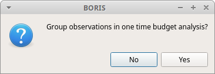
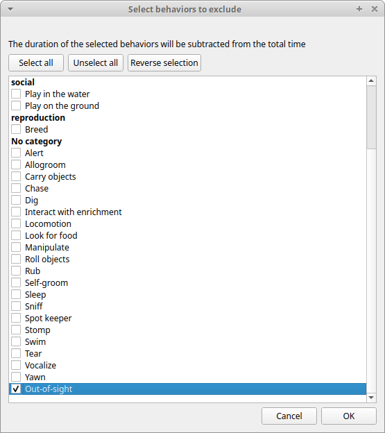
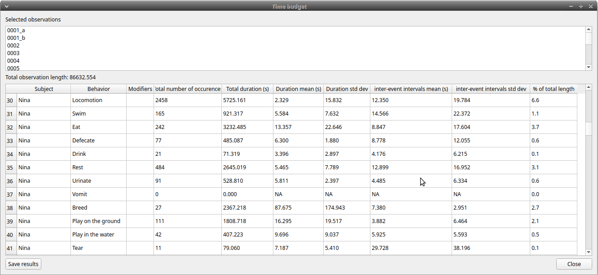
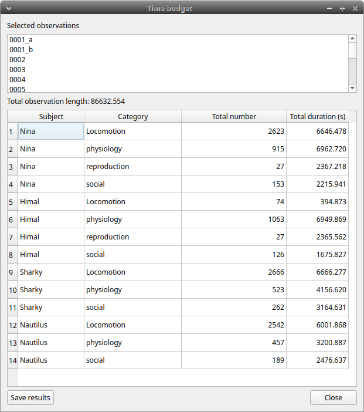
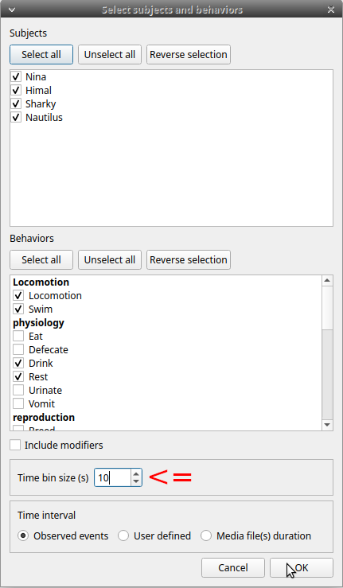
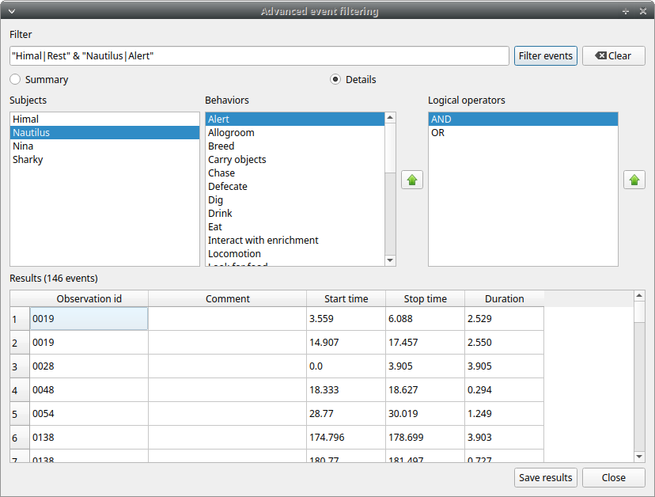
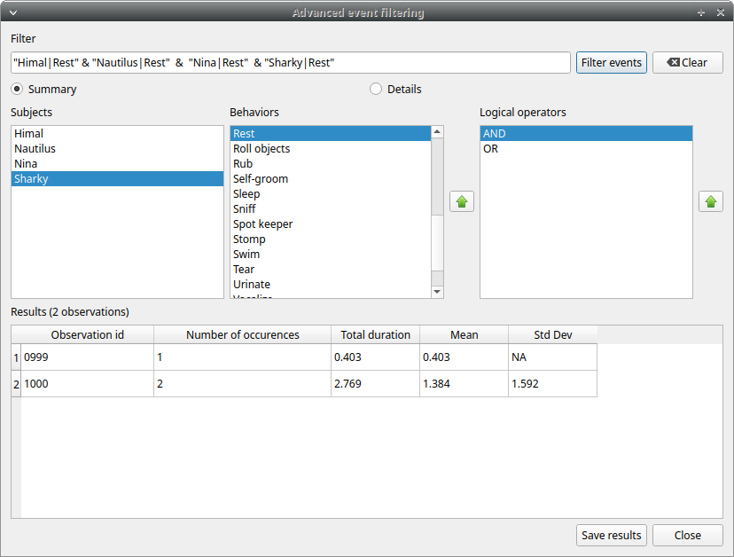

Analysis and plot#
Time budget analysis#
The Time budget analysis can be done by behavior (including or not the modifiers) or by category of behaviors. Choose the option from the Analysis menu.
The Time budget analysis can be done on one or more observations. If you select more than one observation you must then choose for a global time budget analysis that will contain all selected observations or a time budget analysis for every single observation.

Choose Yes to group all observations in one time budget analysis
The Analysis > Time budget menu option shows the time budget for the events of the selected observations. Select the subjects and behaviors you want to include in the time budget analysis:

All behaviors can be selected or unselected by clicking on the Category (bold).
You can choose to include or not the behavior modifiers in the Time budget analysis and to exclude behaviors without coded events.
The Time budget analysis can be restricted to a part of the observation:
- Full observation(s): the analysis will be made on the full observation length.
- Limit to time interval: use the Start time and End time boxes to select starting time and ending time.
- Limit to observed events: the analysis will be made from the first observed event to the last observed event.
The last dialog window will allow you to subtract the duration of one or more behaviors from the total duration of the observation. This can help you if you have defined a "out-of-sight" code in your ethogram for example:

The results contain for each subject and behavior the total nuber of occurrences, the total duration (for the behaviors defined as state events), The duration mean (for the behaviors defined as state events), the standard deviation of duration, the inter-events intervals duration mean, th standard deviation of the inter-events intervals duration and the percent of total duration of observation(s). All duration times are expressed in seconds (s).

The time budget results can be saved in various formats for further analysis:
-
Plain text in tabular format
- Tab Separated Values (TSV)
- Comma Separated Values (CSV)
- Hyper Text Markup language (HTML)
-
Spreadsheet files
- OpenDocument (ODS)
- Microsoft Excel (XLSX, XLS)
-
Pandas dataframe (to be loaded in Python with the pickle module)
-
R dataframe (to be loaded in R with readRDS function)
Important
If a STATE behavior has an odd number of coded events, BORIS will report UNPAIRED instead of results.
Time budget by behavioral category#
The Time budget by behavioral category is similar to the Time budget analysis except that the behaviors are grouped into behavioral categories.

Synthetic time budget#
The synthetic time budget is similar to time budget but with fewer parameters and a different organization of results. Results of all selected observations are organized in columns on a single page. Two parameters are provided for now: number of occurrences and total duration (for the behaviors defined as state events)

All duration times are expressed in seconds (s).
The time budget results can be saved in various formats for further analysis:
-
Plain text in tabular format
- Tab Separated Values (TSV)
- Comma Separated Values (CSV)
- Hyper Text Markup language (HTML)
-
Spreadsheet files
- OpenDocument (ODS)
- Microsoft Excel (XLSX, XLS)
Synthetic time budget with time bin#
The synthetic time budget with time bin is similar to the Synthetic time budget but the results are divised in time bin.
Analysis > Synthetic time budget with time bin
Choose a time bin size (in seconds)


The time budget with time bin results can be saved in various formats for further analysis:
-
Plain text in tabular format
- Tab Separated Values (TSV)
- Comma Separated Values (CSV)
- Hyper Text Markup language (HTML)
-
Spreadsheet files
- OpenDocument (ODS)
- Microsoft Excel (XLSX, XLS)
Inter-rater reliability#
The Cohen's kappa coefficient can be calculated (Analysis > Inter-rater reliability > Cohen\'s kappa).
After selecting 2 observations and a time window (in seconds) for the analysis (the default value is 10 seconds) the Cohen's kappa will be displayed in the results window.

Implementation of IRR Cohen's Kappa in BORIS#
If a time window of n seconds is set the 2 selected observations will be checked every n seconds for agreement/disagreement from the first event to the last event of the 2 observations . In case of a point event the presence of a corresponding event in the other observation will be verified using a time window of n seconds centered on the point event.
A IRR Cohen's Kappa analysis is available in the GSEQ program (http://www2.gsu.edu/~psyrab/gseq). For this the coded events can be exported as aggregated events in SDIS format. See export aggregated events.
Similarities#
Needleman-Wunsch similarity
Co-occurence#
This function allow to determine the co-occurence of 2 behaviors.
Advanced event filtering#
This function allows to filter events from one or more observations by selecting subjects, behaviors and logical operators.
To use the filter, select a subject, select a behavior and click on the button with the green arrow on the side of the behaviors list. The tuple subject/behavior will be added in the filter text edit. A complex filter query can be constructed by adding parenthesis and logical operator & (AND) or | (OR) for combining various subjects and behaviors.
Example of a summarized output showing the occurences of Himal resting while Nautilus in alert:

Example of a detailed output showing the overlaping intervals while Himal rests and Nautilus is in alert:

The same subject can be used many times in the query with OR or AND (in case of non exclusive behaviors):

An unlimited number of conditions can be used:

Parenthesis can be used to group logical conditions into block(s):

The results can be saved in a Tab Separted Values (TSV) file using the Save results button. Other formats will be added in future.
Latency#
The latency will analyze the time between one or more markers (arbitrary behaviors(s)) and other behaviors.